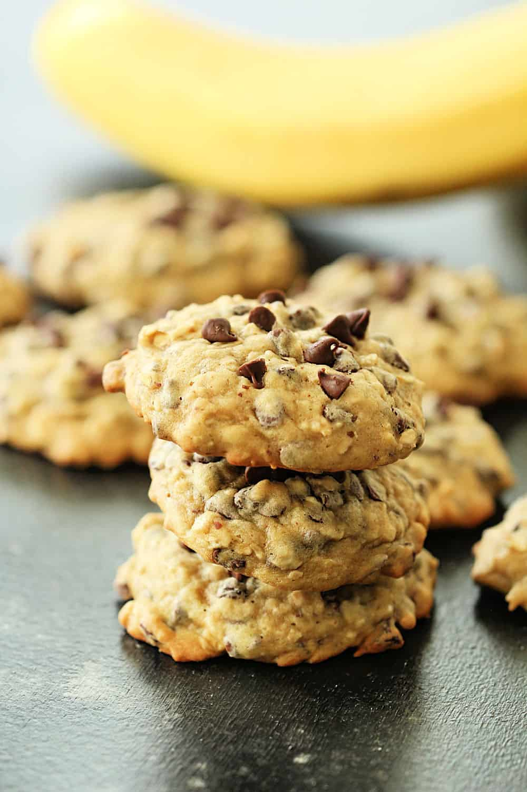

Homepage
Banana Oatmeal Chocolate Chip Cookies

Description
This is my go-to recipe for when I have bananas that have gotten a bit too ripe to enjoy without baking them.
I prefer this over banana bread or ANY other banana-based baked good that is typically made with brown bananas.
These are soft, even days after baking, and will keep everyone coming back for more.
If you'd like to see the source recipe, it's this Six Sisters' Stuff recipe.
Ingredients
- 2 cups all purpose flour
- 1 tsp salt
- 1/2 tsp baking soda
- 3/4 cup butter, softened
- 1/2 cup granulated sugar
- 1/2 cup dark brown sugar
- 1 egg
- 1 1/2 tsp vanilla extract
- 2 ripe bananas, mashed (use as much or as little as you like here)
- 1 cup old-fashioned rolled oats
- 2 cups chocolate chips (I prefer semi-sweet or dark)
Steps
- Preheat oven to 375.
- Whisk together flour, salt, and baking soda in a small bown and set aside.
- Place butter and sugars into a mixing bowl and beat on medium speed until pale and fluffy.
- Reduce speed to low. Add egg and vanilla and mix until combined.
- Mix in banana. Add flour and mix until just combined. Stir in oats and chocolate chips.
- Drop dough onto baking sheets spacing about 1 inch apart. Bake cookies until golden brown and just set, about 12 to 13 minutes.